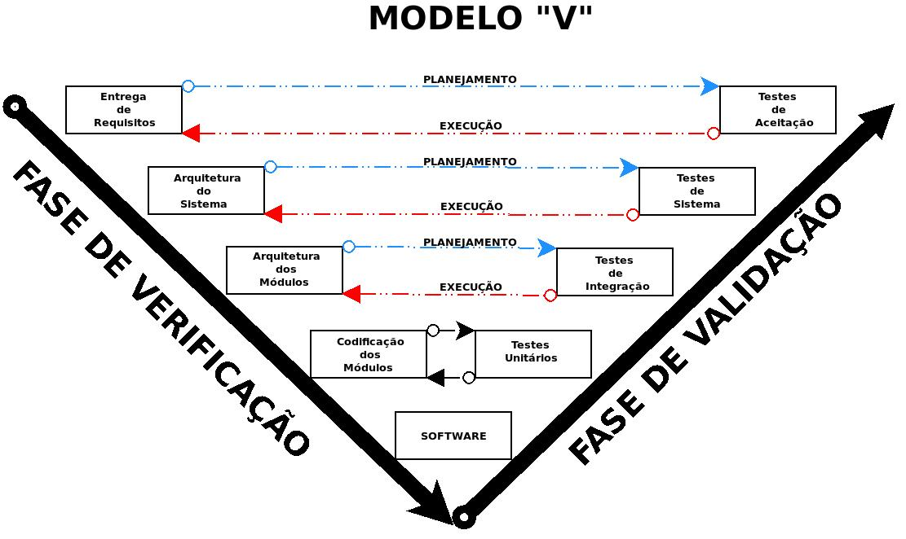

Aula 3 Verificação de Validação de Software II - Continuação
3.1 Fundamentos de Teste de Software
O objetivo primordial do teste de software é descobrir erros. Um bom teste é aquele que tem alta probabilidade de encontrar um erro. Como benefício secundário, os testes demonstram que as funções do software estão funcionando de acordo com as especificações e que os requisitos relativos ao desempenho e ao comportamento parecem estar sendo atingidos. Os dados coletados durante os testes fornecem um bom indício da confiabilidade e da qualidade geral do software. No entanto, é fundamental lembrar que os testes não podem mostrar a ausência de erros e defeitos, apenas que erros e defeitos de software estão presentes. Por isso, não se deve considerar o teste como uma “rede de segurança” que detectará todos os erros decorrentes de práticas deficientes de engenharia de software.
3.2 Os testes e o Ciclo de Vida do Software
3.2.1 Teste de Unidade ou Unitários
Focado em testar cada componente individualmente para garantir que funcione adequadamente como uma unidade.
3.2.1.0.1 Ferramentas (bibliotecas) de teste unitário das linguagens de programação mais populares e robustas
| Nome do framework de teste de unidade | Linguagem | Logotipo |
|---|---|---|
| Pytest | Python | |
| JUnit | Java | |
| CTest | C++ |
3.2.1.1 Exemplo de Teste Unitário no Python
Vamos testar uma função chamada soma que faça adição de dois números a e b.
Crie um arquivo soma.py que contém função chamada soma que faça adição de dois números a e b :
Código do arquivo soma segue abaixo:
Agora crie, no mesmo diretório, um arquivo cahamdo test_soma.py .
Esse arquivo cria a função de este testa test_soma_positivos() que testa a função soma soma passando dois números 2 e 3 para ela.
O resultado esperado é 5 :
Então, estando os arquivos soma.py e test_soma.py no mesmo arquivo, basta executar a ferramenta pytest
============================= test session starts ==============================
platform linux -- Python 3.x.x, pytest-x.x.x, py-x.x.x, pluggy-x.x.x
rootdir: /path/to/your/directory
collected 5 items
test_soma.py ..... [100%]
============================== 5 passed in 0.01s ==============================A função soma() passou no teste unitário.
3.2.2 Teste de Integração
Focado em testar cada componente individualmente para garantir que funcione adequadamente como uma unidade.
3.3 Modelo V
Em Testes de Software, o Diagrama V (ou Modelo V) é uma variação na representação do modelo cascata (ciclo de vida clássico) que descreve a relação entre ações de garantia da qualidade (testes) e as ações associadas a comunicação, modelagem e atividades de construção iniciais. Ele oferece uma maneira de visualizar como as ações de verificação e validação são aplicadas a um trabalho de engenharia anterior.
Em outras palavras, o modelo V correlaciona os testes de Verificação e Validação de Software ao ciclo de Vida do processo de desenvolvimento de Software fornecendo a noção que o software é testado em todo seu ciclo de vida:
| Etapa do Ciclo de Vida do Processo de Desenvolvimento de Software | Qualidade Testes de Verificação e Validação do Software |
|
|
|
|
|
|
|
|
| SOFTWARE PRONTO |
Esse correlacionamento pode ser visualizado na figura abaixo, em formato “V”:

3.4 Testes Unitários
O objetivo primordial do teste unitário é focar o esforço de verificação na menor unidade de projeto do software para descobrir erros dentro dos limites dessa unidade. Ele busca garantir que cada parte individual do sistema funcione corretamente.
O teste unitário se concentra na lógica interna de processamento e nas estruturas de dados dentro dos limites de um componente. Ele examina os caminhos de controle importantes para descobrir erros na lógica do módulo.
3.4.1 Testes Estruturais (Caixa-Branca)
Os testes caixa-branca, também chamados de teste da caixa-de-vidro ou teste estrutural, são uma filosofia de projeto de casos de teste que utiliza a estrutura de controle descrita como parte do projeto no nível de componentes para derivar casos de teste.
O teste de caixa-branca se alinha com o teste unitário. O teste caixa-branca é frequentemente aplicado a pequenos componentes de programas (por exemplo, módulos ou pequenos grupos de módulos), sendo considerado um “teste no pequeno”.
3.4.2 Testes Funcionais (Caixa-Preta)
Os testes caixa-preta, também chamados de teste comportamental ou teste funcional, são uma abordagem de teste que focaliza os requisitos funcionais do software. Diferentemente dos testes caixa-branca, que examinam a estrutura lógica interna do software, o teste caixa-preta faz referência a testes realizados na interface do software, com pouca preocupação em relação à estrutura lógica interna do software. Em vez de olhar o código-fonte, os testadores caixa-preta trabalham com a visão externa do software.
3.5 Exercícios
3.5.1 Testes
| TESTE 01 |
|---|
| Qual é o objetivo fundamental do Teste de Software ? |
|
|
|
|
|
| TESTE 02 |
|---|
| No contexto de Testes de Software, qual a distinção essencial entre verificação e validação? |
|
|
|
|
|
| TESTE 03 |
|---|
| Qual tipo de teste de software se baseia no exame da estrutura interna do software, incluindo seu código-fonte, para projetar casos de teste? |
|
|
|
|
|
| TESTE 4 |
|---|
| Por que é importante realizar testes em diferentes níveis (unidade, integração, validação, sistema)? |
|
|
|
|
|
| TESTE 5 |
|---|
| Qual é a principal característica que o Modelo V busca explicitar em relação ao ciclo de vida clássico? |
|
|
|
|
|
| TESTE 6 |
|---|
| Modelo V, à medida que a equipe de software “desce” pelo lado esquerdo do “V”, qual é o foco principal das atividades? |
|
|
|
|
|
| TESTE 7 |
|---|
| No Modelo V, qual tipo de atividade de garantia da qualidade está tipicamente associada à fase de especificação de requisitos? |
|
|
|
|
|
| TESTE 8 |
|---|
| Segundo o Modelo V, as atividades de teste no lado direito do “V” têm como objetivo principal: |
|
|
|
|
|
| TESTE 9 |
|---|
| No Modelo V, o teste de sistema, que está ligado à fase de projeto da arquitetura do sistema, visa: |
|
|
|
|
|
| TESTE 10 |
|---|
| Qual a principal vantagem de visualizar o processo de teste através do Modelo V? |
|
|
|
|
|
3.5.2 Respostas dos Testes
| Teste | Resposta |
|---|---|
| Teste_01 | B |
| Teste_02 | C |
| Teste_03 | D |
| Teste_04 | C |
| Teste_05 | E |
| Teste_06 | C |
| Teste_07 | D |
| Teste_08 | B |
| Teste_09 | E |
| Teste_10 | C |
3.5.3 Questões Dissertativas:
| Questão 1 |
| Discuta a importância da distinção entre verificação e validação no contexto de testes de software. Explique como cada uma dessas atividades contribui para a garantia da qualidade do produto final, citando as definições apresentadas nas fontes. |
Resposta: ________________________________________________________________________________________________________________________________________________________________________________________________________________________________________________________________________________________________________________________________________________________________________________________________________________________________________________________________________________________________________________________________________________________________________________________________________________________________________________________________________________________________________________________________________________________________________________________________________________________________________________________________________________________________________________________________________________________________________________________________________________________________________________________________________________________________________________________________________________________________________________________________________________________________________________________________________________________________________________________________________________________________________________________________________________________________________________________________________________________________________________________________________________________________________________________________________________________________
| Questão 2 |
| Compare e contraste as abordagens de teste de caixa-branca e caixa-preta. Para cada abordagem, descreva seus focos principais, as informações necessárias para sua aplicação. Avalie as vantagens e desvantagens de cada uma na detecção de diferentes tipos de defeitos. |
Resposta: ________________________________________________________________________________________________________________________________________________________________________________________________________________________________________________________________________________________________________________________________________________________________________________________________________________________________________________________________________________________________________________________________________________________________________________________________________________________________________________________________________________________________________________________________________________________________________________________________________________________________________________________________________________________________________________________________________________________________________________________________________________________________________________________________________________________________________________________________________________________________________________________________________________________________________________________________________________________________________________________________________________________________________________________________________________________________________________________________________________________________________________________________________________________________________________________________________________________________
| Questão 3 |
| Explore a relação entre os diferentes níveis de teste (unidade, integração, validação e sistema) no ciclo de vida do software. Explique os objetivos específicos de cada nível e como eles se complementam para garantir a qualidade em diferentes granularidades do sistema. |
Resposta: ________________________________________________________________________________________________________________________________________________________________________________________________________________________________________________________________________________________________________________________________________________________________________________________________________________________________________________________________________________________________________________________________________________________________________________________________________________________________________________________________________________________________________________________________________________________________________________________________________________________________________________________________________________________________________________________________________________________________________________________________________________________________________________________________________________________________________________________________________________________________________________________________________________________________________________________________________________________________________________________________________________________________________________________________________________________________________________________________________________________________________________________________________________________________________________________________________________________________
3.5.4 Respostas Questões Dissertativas:
| Resposta questão 1 |
A distinção entre verificação e validação é fundamental em testes de software para garantir a qualidade sob diferentes perspectivas. Verificação busca responder à pergunta: “Estamos criando o produto corretamente?”. Envolve um conjunto de tarefas que asseguram que o software foi construído e pode ser rastreado segundo os requisitos do cliente. Isso inclui diversas atividades de garantia da qualidade de software (SQA), como revisões técnicas, auditorias de qualidade e configuração, monitoramento de desempenho e revisão de documentação. Por outro lado, a validação procura responder: “Estamos criando o produto certo?”. Ela se refere a um conjunto de tarefas que asseguram que o software criado atende às reais necessidades dos usuários. A validação de software é alcançada por meio de uma série de testes que demonstram conformidade com os requisitos. Um plano de teste descreve as classes de testes a serem realizados para garantir que todos os requisitos funcionais, características comportamentais, conteúdo, requisitos de desempenho e documentação estejam corretos. Ambas as atividades são cruciais: a verificação garante que o software está sendo construído de acordo com as especificações, enquanto a validação assegura que as especificações atendem às necessidades do cliente, contribuindo assim para um produto final de alta qualidade. |
| Resposta questão 2 |
As abordagens de teste de software podem ser amplamente categorizadas em caixa-branca (ou white-box) e caixa-preta (ou black-box). O teste caixa-branca foca na estrutura interna do software, incluindo sua lógica, código e fluxo de controle. Para aplicar testes de caixa-branca, é necessário conhecimento detalhado do código-fonte e do design do software. A vantagem do teste caixa-branca é sua capacidade de descobrir erros lógicos internos, caminhos não percorridos e problemas na implementação. No entanto, pode ser difícil e demorado para sistemas complexos e não detecta necessariamente erros relacionados aos requisitos ou à usabilidade. Em contraste, o teste caixa-preta examina a funcionalidade do software do ponto de vista do usuário, sem conhecimento de sua implementação interna. As informações necessárias são os requisitos do software, as especificações e a interface do usuário. A principal vantagem do teste caixa-preta é sua capacidade de validar os requisitos do software e identificar problemas na funcionalidade e usabilidade percebidas pelo usuário. Sua desvantagem é que ele não garante a cobertura de toda a lógica interna do software e pode não detectar certos tipos de erros de implementação. Ambas as abordagens são importantes e complementares para garantir uma qualidade abrangente do software. |
| Resposta questão 3 |
A estratégia de teste de software geralmente envolve múltiplos níveis que abordam a qualidade em diferentes granularidades do sistema. O teste de unidade é o primeiro nível e se concentra em testar individualmente cada unidade (componente, classe ou função) do software, conforme implementado no código-fonte. O objetivo é verificar a funcionalidade básica e a correção de cada parte isoladamente. Após as unidades serem testadas, o próximo nível é o teste de integração, que se concentra em testar as interfaces e a interação entre os diferentes componentes que foram integrados para construir a arquitetura do software. O objetivo é descobrir erros nas interfaces entre módulos e os efeitos colaterais causados pela adição de novas unidades. O teste de sistema avalia o software integrado como um todo, juntamente com outros elementos do sistema (hardware, outros softwares, pessoas). O objetivo é aprovar o software quando ele é incorporado em um sistema maior e verificar os requisitos do sistema. Tipos de teste de sistema incluem teste de recuperação, teste de segurança, teste de esforço e teste de desempenho. Esses níveis de teste são complementares e progressivos. Finalmente, o teste de aceitação (validação) ocorre após a integração e tem como objetivo demonstrar a conformidade do software com os requisitos estabelecidos como parte da modelagem de requisitos. Ele busca responder à pergunta se o software construído atende às necessidades do cliente. Os critérios de validação, derivados dos requisitos do software, formam a base para essa fase de teste. Resumindo: o teste de unidade ajuda a identificar e corrigir erros nas partes menores do software, o teste de integração garante que essas partes funcionem juntas corretamente, o teste de sistema assegura que o software funcione de forma adequada dentro do sistema completo e o teste de aceitação (validação) verifica se o software atende aos requisitos do cliente. Cada nível foca em diferentes tipos de defeitos, contribuindo para uma garantia de qualidade mais abrangente. |
| Resposta questão 4 |
| Resposta questão 5 |
| Resposta questão 6 |
| Resposta questão 7 |
| Resposta questão 8 |
| Resposta questão 9 |
| Resposta questão 10 |
=======================================================
3.6 Cadastro de Clientes
Acesso ao Banco de Dados na núvem POSTGRES para você testar o seu:
| host: | pg-ads-engs2-miguel7penteado-ads-engs2.c.aivencloud.com |
|---|---|
| porta: | 17135 |
| usuario: | SEU RA |
| senha: | SEU RA |
| banco: | banco-dados-ra |
| SSL: | require |
OBS: substitua “ra” pelo seu ra, obviamente.
Cliente para testar via celular:
Android Postgresql Client
https://play.google.com/store/apps/details?id=rafrobsystems.postgresclient&pcampaignid=web_share